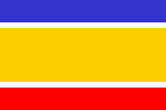

Republic of Cyprus Flag and other Flags in Cyprus
The Annan plan flag

The flag proposed by Annan plan The latest UN effort for the reunification of Cyprus resulted in the presentation of a plan by the Secretary-General for a comprehensive settlement of the Cyprus problem. On 24 April 2004 the people of Cyprus were asked to approve or reject, through separate, simultaneous referenda by the two communities, the UN Secretary-General's proposal (Annan Plan V). A clear majority of 75,8% Greek Cypriots rejected the proposed Annan Plan because they felt that the finalized text, which incorporated arbitrarily many last minute demands by Turkey, was not balanced and did not meet their main concerns regarding security, functionality and viability of the solution. The Turkish Cypriots approved the plan by 64,9%. The flag of the Annan plan for Cyprus was selected among more than 2000 flag proposals that were submitted to a competition sponsored by the United Nations in 2003. Unlike the flag of Republic of Cyprus, the Annan plan flag had both red and blue (the colors of Turkey and Greece), and symbolized the separation and division of Cyprus along ethnic lines, something that was in line with the rest of this UN plan. Annan plan flag in the news
|